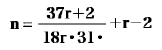

黒いモロッコ皮の表紙をつけた一冊の手帳が
 しの水仙がその上に影を落している。一見、
しの水仙がその上に影を落している。一見、この手帳を手にいれるためにある夫婦が人相の変るほど焦慮していた。けっきょく望みをとげることが出来ず、恨をのんで北のほうへ旅立って行った。そしていい加減なめぐり合せで、望んでもいない自分が、遺品といった意味合いでうやむやのうちに受取るような羽目になった。運命とは元来かくのごとく不器用なものであろう。
今朝着くはずであった資料の行李は事故のために明日まで到着せぬことになった。
当時、彼は六階の屋根裏に、夫婦は四階に自分は中間の五階に住んでいた。この二組の生活を観察しようと思うなら同じ数だけ階段を昇降するだけでよかった。自分は階下で夫婦と談話し、すぐその足で六階の彼のところへ上ってゆく。互いに関知せず、そのくせ微妙に影響し合う興味深い二つの生活を自分は両方からあますところなくながめていたのである。
自分は文学者ではないから面白いようにも読みやすいようにも書くことは出来ぬ。が、ものを見る眼だけはたいして誤らぬと信じる。自分は見たままに書く。これを書く動機は充分にあるのだが、それまでうちあける気はない。懺悔のためとも感傷のためとも、勝手にかんがえてくれてよろしい。
一、この年の中頃から
手すりのかわりに索をとりつけた穴だらけの暗い
寝台に腰をおろしてなすこともなく腕をこまぬいでいると、扉を叩いて、びっくりした子供のような一種不可解な顔をした男がはいってきた。髪は遠慮なく薄くなりかけているが、顔のほうは二十一、二歳でハタと発達をとめたものとみえる。
自分の部屋を訪れるために無理に上衣の
一、夫婦の部屋は貧困なりにやはり家庭だとうなずかせる
この夫婦はアメリカの生れのいわゆる第二世同志で、夫のほうは声楽を妻君のほうはピアノの勉強をしているということだった。
食事と身上話がすむとお定まりのアルバムが出てきた。いずれの前例に劣らず退屈千万なものだった。その中に博徒のような無惨な人相をした角刈の男の写真があった。自分は興味を感じ、親族かとたずねると、それは
部屋へ帰ろうとしてたちあがると、そのとき窓にそってはるか階上から盛んに落下する物音をきいた。
一、一月一日の朝のことである。上の部屋で傍若無人に飛びはねる粗暴な物音で眼をさました。いったい上の部屋の住人はこれまでも夜っぴて部屋を歩きまわったり、けたたましく椅子を倒したりして悩ましたが、この朝の騒ぎはじつに馬鹿馬鹿しいもので、そのために天井の壁土が
無言で扉をおしあけると、眼の前にいささか常軌を逸した光景が展開した。広い部屋の床全面に約二尺ほどの高さにおどろくべき量の紙屑が堆積し、壁にはいたるところに数字と公式が落書してあった。床の上で自在に用便するとみえ、こんもりと盛りあがった固形物が紙屑のあいだに隠見していた。
長椅子の上には、極めて痩身の四十歳位と思われる半白の人物がいて、敵意に満ちた眼で自分を凝視していた。それは何千人に一人というような個性的な顔で、額は異様に広く顎は翼のようにつよく張りだし、房のような眉の下には炎をあげているような強烈な眼があった。
彼は無断侵入が真に
 した。自分はほとんど眼も口もあけられぬ異様な悪臭に
した。自分はほとんど眼も口もあけられぬ異様な悪臭に「天井の壁が落ちてきて物騒でしようがない。暴れるのもいい加減にしておけ」彼は急にうちとけた口調になって「実はナ、今日うれしいことがあってだれかと喋りたくてしようがなかったところなんだ。おれが騒いだために貴様がやってきたというのは、こりゃなかなか運命的な話だぞ……争われないもんだ。貴様があんな口調でものをいったのがおれの感情にピッタリした。忙しくなかったらしばらくそこへ掛けて行ってくれ。実はナおれの研究はまさに完成するところなんだ。間もなくおれは無限の財産を手に入れることになるんだ。無限だ。無限、無限！
壁の上にはこんな公式があった。

めんどうくさくなったので、判らぬとこたえた。「この公式はナ、たとえばルウレットの
賭博の絶対的な法則などはありえない。虚在の対象を追求して十年の歳月を空費した愚かな執着のすがたをあわれ深くながめた。
一、次の日から部屋に籠って勉強をはじめ、一週間ほど多忙な日を送っていたので、どちらの部屋もおとずれる機会がなかった。仕事がひと区切りついたので、その夕方、夫婦のいる四階へおりて行くと、夫婦は長椅子に並んで掛けていたが、夫のほうは放心したような中心のない顔をし、妻君のほうはせっかくの魅力のある眼を赤く泣き腫していた。
聞いてみると、二人はその朝不幸な手紙を受取ったのである。
「夫は歌をうたうほかなにひとつ出来ない能なしだし、あたしはミシンもタイプライターもだめなんです。パパがいやしい仕事だといってやらしてくれなかったのよ。アメリカならどうにかなるでしょうが、こんなせち辛い巴里じゃ日本人の働く口なんか、あるわけはないんだし、友達はみんなじぶんのことだけで精一杯で、他人のことなんかにかまっていられない、貧乏なひとたちばかりなんだから、いずれは餓死するか自殺するか、あたしたちの運命はもうきまったようなもんですわ」
いかにもしんみりと
一、それからまた三日ほどしてから、なにかの用事で夫婦のところへ行くと、発育不良の子供面が待ちかまえてでもいたようにいそいそと椅子から立ってきた。
「喜んでください。ぼくたちは餓死しないでもすみそうですよ。いやひょっとすると大金持になるかも知れないんです。まアこれを読んでごらんなさい」
いわば、喜色満面といった風情で、前日の夕刊をさしつけてよこした。なんにしても結構な話にちがいないから、それはよかったといいながら、
夫のほうは悪いグロッグでも飲みすぎたようなしどろもどろの口調で「どうです。凄いじゃありませんか。一と晩に二十万法！ ともかく最近モンテ・カルロはつづけざまにやられているんですよ。先週も三人組の独逸人に百万
額際まで赤くなって熱狂しながら、机の上に置いてあった、れいの緑色の
細君は心得た顔でモンテ・カルロ新聞をとりあげると、滑稽とも悲惨ともいいようのない真面目くさったようすで
夫のほうは眼玉を釣りあげてギョロギョロしていたが、首だけこちらへねじむけて「ごらんなさい。
赤が出た。
「赤が出たらどこまでも赤に乗って行く約束だったじゃありませんか。勝手にシステムを変えるからいけないんです」と細君がやりこめた。夫のほうは見るもみじめに狼狽して「システムといったって博奕のことなんだから百パーセントに正確なもんじゃない。これは負ける回数をうんと少くして出来るだけ勝つ回数を多くしてその差で自然に儲けるようになっているシステムなんだから、一回や二回負けたってたいしたことはないさ。もっともいまは勝手にシステムを変えたからいけなかった。きめたシステム通り赤へ乗ってゆく。こんどは大丈夫……赤へ五百
黒が出た。自分は見かねて、六階にいる男もじつはルウレットの研究をしているのだが、十年もやってようやくものになりかけているそうだという話をした。それほど研究してもかならず勝てるとはきまっていぬというのに、こんなにあやふやな思いつきでルウレットにたちむかうなんて愚劣なことはよしたがよかろうとたしなめたつもりだったが、二人にはこれがまるで通じぬらしく、たちまちはげしい渇望の色をあらわしてぜひそいつを教えてもらうことにしようといいだした。自分は「十年もかかって研究したものをそうかんたんに教えてくれるはずはなかろう」と
そして夕食に招くという名目で、うまくつれだしてほしいとたのんだ。自分は事を好むほど若くはないつもりだが夫婦の
一、彼は長椅子に寝ころがって煙草をふかしていた。部屋の紙屑は残らず消え、意外に清潔なようすになっていた。机の上にも埃がたまっていてしばらくそこに倚らなかったことを示していた。
彼は元気よくはね起きて「おれが逢いたいと思ってるとかならず貴様がのこのこやってくる。おれと貴様の間には感応し合う電気のようなものがあるのかも知れぬな」といった。「じつはお前を晩飯に誘おうと思ってやってきたのだ。もっとも二人きりじゃない四階の夫婦もまじるのだが」
案の定彼はうんとはいわなかった。女は苦手だとか、おれはもう社交の習慣を忘れてしまったとか、いろいろな口実を設けて頑強に反抗した。自分はそこで「バタを載っけた
彼は頭を抱えて呻いていたが「貴様はひとの弱点をつくようなことをする。貴様の策略にのるのは忌々しくてたまらんが、抵抗は出来ん。よし行く」といってたちあがった。
彼の貪食ぶりは言語に絶した壮観で、挑みかかるようにありったけのものを喰いつくすと、喉を鳴らして遠慮なく
 気
気例の通り細君が
した。子供面はむきになってノートをふりまわしながら「現にこのの通り［＃「このの通り」はママ］勝っているじゃないか」と叫んだ。彼は「勝っていることも事実だが、いずれ負けてしまうのも事実だ。お前の様な馬鹿野郎を納得させるには理窟では駄目なのだナ。いま実例を示してやる。おれが読むからやってみろ」といってモンテ・カルロ新聞をとりあげた。珍妙なことがはじまった。黒へ「どうだ。おれは目を三つおきに読んだだけだが、こんなことで
彼はまじまじと夫婦のようすをながめていたが懐中から黒い表紙の手帳をとりだすと、数字のギッシリとつまった
彼は妻君が読みあげるのを頬杖をついてきていたが、やがて無造作に「黒へ
黒が出た。また黒へ賭けた。黒が出た。次は赤へ賭けた。赤が出た。たった三回で（資本の一万二千法を差引いて）五万法も勝ってしまった。彼は無頓着なようすで黒へ二度、赤へ二度、黒へ一度、赤へ三度……それからまた前へ戻って、黒へ二度、赤へ二度というぐあいに最高額を
ふしぎな現象がおきていた。われわれは遅まき乍ら、ルウレットがいま黒と赤と交互に（黒２回―赤２回―黒１回―赤３回）（２―２―１―３）という秩序立ったアッパリションを飽くことなく繰り返していることを発見した。
この単純極まる反覆を十回もつづけた後、ルウレットは別な配列へ移っていた。今度は（赤１回―黒１回―赤１回―黒２回）……また始めへ戻って（１―１―１―２）という反覆運動だった。彼は機械的にそれに追従していたが、一時間ののち、ただの一度の失敗もなしに八十万法勝ちあげてしまった。これは仮想の賭博にすぎぬが、われわれはうず高い金貨の山と、厖大な銀行券の束をありありと机の上にながめる思いだった。
夫婦は酔ったような赤い顔をし、はげしい渇望の色をあらわしながら荒い息づかいをしていたが、細君がだしぬけに床に土下座をして彼の手をとった。
「助けて、ください」哀切きわまる眼つきで彼を見あげながら「どうぞ……そのシステム……」といった。
彼は守銭奴がその宝を隠すときのようにあわてふためいて手帳を内懐へおしこむと、悲哀とも憤怒ともつかぬ調子で「賭博に、システムはない」と叫んだ。そして荒々しく戸をあけて出ていった。
一、それから二日ばかりののち、自分はまた夫婦の部屋をおとずれた。自分が入ってゆくと夫は急に夕刊を取りあげて、いまタルジュ事件について論じていたところだったといった。夫婦はたった二日のうちにひどく憔悴してしまい、眼のまわりに黒い輪のようなものが出来ていた。眼の中には刺すような光があらわれ、声には陰惨な調子がまじり、誇張していえば人相が変ってしまったといってもいいほどだった。
タルジュ事件というのは、妻君が

かなり夜が
一、帰るとすぐ寝床へはいったが、夫婦が殺人を企てているのではなかろうかという疑念のためにどうしても眠りにつけぬのであった。強いて頭を転じようとしたが、どうしても、どういう動機によって疑念をおこすにいたったか考えて見ることにした。
第一は夫婦の部屋にはいって行ったときの印象である。自分が入って行くと、いまタルジュ事件について話していたところだったといった。しかしその時の実感によれば、明らかにそれ以外の非常に険悪ななにか犯罪に類したことを話しあっていたのではなかったかというような気がした。
第二はタルジュ事件に対する夫婦の興味のもちかたである。普通にわれわれがもつ社会的な興味の度を超えた異常な熱心をあらわし、しかも話題の中心は毒殺とかというところにあった。第三は毒物学の本である。自分がこれをとりあげたとき、夫の眼にはあきらかに狼狽の色がうかんだ。しかるに妻君はそれがこの場所にあるゆえんを沈着に釈義した。それはあまりに沈着すぎるためにかえって相手に疑念を抱かせるような種類の沈着で、妻君の意志を裏切ってその説明が虚偽であることを明白に申し立てていた。するとあの毒物学の本はどういう目的のため購求されたのであろう？ 人間の頭の発展の仕方に幾通りも特別なスタイルがあるものではない。悲境を打開する方法を勤勉に求めずに賭博に求めるような
さてここまで考え来たったところで、また新たな想念に煩わされることになった。それは一種異様なもので、われながら不快を感じたのであるが、そのアイデアとは、殺人を遂行するまでの経過を冷静に観察して見たいというそれであった。いま一人の人間を殺そうとしてある人間が計画をたてている。それは細心に考案され、徐々に対象の命に迫ってゆく。さまざまな曲折を経たのち、それは成功する（或いは失敗する）。いま自分の眼前で謀殺の全過程と全段階が展開されようとしている。人間が徐々に殺されてゆく経過をこの眼で見るなどは、千載一遇の機会であらねばならぬ。しかも殺人と被殺人者の両方の面からこれをながめ、「運命」の
よりよく観察するためには両者にもっと接近しなくてはならぬ。彼のほうはいいとしても、夫婦のほうへ毎日出掛けていく口実がない。しかしこんなぐあいには出来る。不便だという名目で夕食の世話をして貰う。相当以上の費用を払ったら承諾するにちがいない。
さいわい自分の放心ぶりは彼等に愚直凡庸な人物であるかのような印象を与えているから、彼等に気兼ねなく振舞わせることが出来るであろうと思う。
観念内の遊戯として
一、翌朝になっても観念にたいする熱望は一向に薄らいでいない。自分は階下におりて夕食の件を依頼した。案の定妻君は快諾した。殺人計画の進行を仔細に知るためには、対抗上、毒物学の知識が必要であるとかんがえ、その足で図書館に行き、妻君の手元にある、
Witthaus, Manual of Toxicology, Kunhel, Handbuch der Toxilogie その他二冊を借りだした。
一、一月十三日、いよいよ今日から観察を開始することにきめ、手帳を一冊用意して、医家の臨床日記のような体裁で、夫婦の言動にあらわれた犯罪的徴候を逐一書きとめておくことにした。
ところでここに一つの困難というのは、毎日六階の住人を訪問する口実がないことである。彼はすぐれた洞察の才をもった男であるからいい加減な言いぬけでは意図を見抜かれるおそれがある。大人気ない思いつきから、不快をあたえたあの夜以来彼に逢う機会がなかったがその折の陳謝をしながら、適当な口実を見つけようと思って六階へあがって行った。
彼は窓に倚って茫然と暮れかかる
彼はあの夜のことに触れたくないようすで始終そっぽを向いていたが、
なぜか頬を紅潮させて窓のほうへ眼をそらした。憔悴した頬が少年のそれのように生々とかがやき、あたかも真紅の二つの薔薇が咲きだしたかの如き印象をあたえた。やがて彼はいった。「ひとりでしゃべったが貴様の用はなんだ」自分は、これから毎日、話しにきたいといった。「むしろ忝ない」と彼がこたえた。
一、五日目にはじめて彼を訪ねた。毎日訪問することにしておいたが夜を除く以外の時間をもって大急行で毒物学の知識を摂取する必要があったからである。今日の主たる目的は殺される人間というものは直前どんな人相をしているものかそれを見届けるためであった。一般に
彼は頭を抱えて長椅子に仰臥していた。その顔には苦悩の影がやどっていたが、不吉を感じさせるようなものは見られなかった。彼はチラリと目だけうごかして自分のほうを見ると、「おい、おれはみょうなことになったよ」ととつぜんにいった。「おれは熱烈にあの妻君を愛するようになってしまった。これだけは君にも告白しないつもりだったが苦しくて我慢できぬからいう……どうしてこんなことがはじまったか説明は出来ぬ。おれは過去にこんな経験を持たぬので、これを恋愛だと認めるのさえだいぶ暇がかかった。はじめおれはたぶん情慾だけの問題だとかんがえたのでスファシクス（巴里の公認女郎屋の名）へ出かけてみた。そしてこの感情は肉体の飢餓でなく、心の飢餓によってひきおこされたものだということを知った。
四十三歳ではじめて恋愛をしたといったら貴様は笑うかもしれぬ。しかしどういう激烈な状態ではじまるものかそれだけは察してくれるだろう。この十日の間どのくらい悶え悩んだか、説明したところで通じるはずはないからいわぬ。ただおれは人間が経験するであろう苦悩の最も深刻なものを経験したとだけいっておく。率直にいうが、おれはあの細君に愛されたい、おれのものにしたい。おれはあこがれ、渇望していまにも気が狂いそうになる。しかし、それはもとより不可能だ。芸術と賭博と、二つの愚かなもののために恋愛する資格を消耗してしまった。おれにはもはや青春も健康も精力も残っていない。のみならず彼女は人の妻だ。これは厳粛なことだ。おれの道徳はどんな理由があろうとそれを侵すことはゆるさぬ……非常に苦痛だが、なんとかしてこの感情を圧し殺してしまうつもりだ」
自分はついにひと言でも発することができなかった。低調な精神をもってこの壮烈な魂になにをいいかけようというのか。そしてここに明瞭な運命の初徴を見た。
一、その夜部屋へひきあげようとすると亭主が、「このごろ南京虫がふえてやりきれぬから、部屋を密閉して燻蒸消毒をするつもりだ。ついでだからあなたの部屋もやってあげましょう。二日だけ近所のホテルへでも行ってくれればすむのだから」と云った。「やってもらってもいいが、燐などを燃されては標本が駄目になってしまうが」というと、「いや、そんな心配はありません。ピュネリマという無害の燻蒸薬です」とこたえた。
部屋に帰るやいなや、ピュネリマとは、いかなるものかを調べて見た。それはシャン化物で燻蒸する際に発する水シャン化酸
階下の部屋を消毒することがその階上の人間の死を意味するなどと誰が思いつくものだろう。巧妙な夫婦の計画には驚嘆の念を禁じ得ない。その意図を知りつつ部屋を明けわたせば、積極的に彼等の計画を助けたことになる。次の朝、いま至急の勉強中であるから部屋を動くわけにはゆかぬと謝絶し、その足で六階へのぼって行くと、彼は風邪の気味で赤い顔をして寝ていた。そして、これでは食事にもさしつかえるから、妻君に病中の用事を達してもらいたい、君から頼んでくれるわけにはゆかぬかと、臆し、赤面しながら、極めて遠廻しにその意味をいった。
彼の不憫な恋情がいとしまれてならぬ。その苦しい心の中はもとよりよくわかるが、夫婦にむざむざ機会を与えるような取り計いは出来ぬ。「それくらいのことで、妻君を煩わす必要はない。おれがやってやる」といった。果して彼は落胆したようすで、以来非常によそよそしくするようになった。無情を怨むような眼つきをし、時には自分の来ることを好まぬような態度さえ露骨に示す。
一、三日ほど後の夜、妻君が六階の住人を夕食に招きたいから言づてを頼むといった。自分さえ喰えないやつらがなんで人を招く。また新奇な方法を案出したと見てとったので、彼は風邪気味だから招待には応じられまいと告げた。夫婦が彼に接触する口実になりはせぬかとおそれたのである。
次の夜、はいってゆくと妻君が寝床で丸薬を飲んでいた。丸薬の箱にポリモス錠と書いてあった。病気かときくと、「このごろ何となく元気がないから強壮剤をのんでいる」とこたえた。食事ののち、夫婦に背を向けて新聞に読み耽っていたが、そのうちになにげなく顔をあげ、ピアノの黒漆に映じている異様なものを見た。夫婦は互に目でうなずき、
生れて以来、いまだ感じたことのないような深刻な恐怖のうちに夜を明かした。徴候を察知しようとするあまり、いささか打診しすぎ、そのために夫婦に企図を察しられてしまったのである。それはまだ疑いという程度のものであろうも、危険の程度は同じである。夫婦の計画を知っていると感づいたら、たぶん生かして置くまい。そのためには機会はあり余るほどあるのである。
一、翌朝「売薬処方便覧」でポリモス錠の処方を調べ、その丸薬には強壮素として
 thyl
thyl ne の静脈注射である。メチレエヌ青……しかしそれをどうして手に入れるか。残された方法としては、対抗的に自分もまた亜砒酸の極微量を増量服用することである。命を賭けてまで観察にふけるほど愚ではない。
ne の静脈注射である。メチレエヌ青……しかしそれをどうして手に入れるか。残された方法としては、対抗的に自分もまた亜砒酸の極微量を増量服用することである。命を賭けてまで観察にふけるほど愚ではない。一、入ってゆくと亭主が飯ごしらえをしていた。妻君はとたずねると六階の看護をひきうけてそっちへ行っているとこたえた。役にも立たぬ一冊の古手帳のために夫婦は惨酷なる機会をつかんでしまった。彼が毒殺されるのはもはや時間の問題である。たぶん亜砒酸の過度の定服によって身体の諸機能を退行させられ、消えるように死んで行くのであろう。六階へ行くと彼は額にうっすら汗をかいて眠っていた。はかない冬の夕陽が顔にさしかけ一種蒼茫たる調子をあたえている。顔は急に彫が深くなり、鼻が聳え立っているようにみえる。抜群の精神と少年のごとき純真な魂をもったこの男は低雑下賤な夫婦のために殺される。自分は心のなかでいった。貴様はもう死ぬ……交会の日は浅かったが年来の友と死別するような悲哀の情を感じた。この男も薄命であった。
つぎの日の夜あけごろ。
前の廊下を駆け歩くあわただしい足音をきいた。
行ってみると彼はとめどもなく嘔吐しつづけていた。もはや吐くものがなくなり薄桃色の液を吐いていた。
夜あけ近く六階へあがって行った。扉をひきあけると思いがけない光景が展開した。夫婦は睡眠不足で赤く眼を腫らして緊張したようすで動きまわっていた。妻君は湯タンポを入れ換え、
一、二週日にわたる夫婦の看護で、彼は類似赤痢から奇蹟的に命をとりとめ、寝台のうえに坐っていた。自分を寝台の横にかけさせると唇のはしに皮肉な皺をよせながらいった。
「おれは自殺するつもりで、毎晩あの雨受けの腐れ水をのんでいたんだ。これ以上生き
一、二日ほどのち、夫婦がお別れだといって部屋へはいってくると細君のほうが、懺悔したいことがあるといいだした。
「あたしたち六階の先生を殺そうと思っていたんです。なんの目的かいわなくともおわかりでしょう。でもそれはかんがえるほどたやすいものではありませんでした。いざやろうとなると、二人で顔を見あわせて溜息をついてしまうんです。そのうちにあのかたを看病することになっていつでもやれるようになりましたが、そうなるとあたしのいないうちに夫がやりはしまいか、容体がすこし悪くなれば自分が毒を飲ましたと思われはしまいかと、お互いにさぐりあい監視しあって、敵同志のようになってしまったんです。そのうちに、こんなに苦しむならたとえ餓死をしてもよそうといいだしました。そこへあの急変でしょう。このまま死なせると、あたしたちの思いで殺したようになるので死に身に看護してとうとうなおしてしまいました」
亭主はこれから
次の夕方、夫婦は白耳義へ発っていった。タクシーの窓の中で手を振りながら。
一、五日ほどのち六階へ上ってゆくと、彼はたぐまったような恰好で寝台で横になっていた。非常に痩せ細り、顔などは、びっくりするほど小さくなっていた。自分が入って行くのをもどかしそうにながめながら、癇癪をおこしたような声でいった。「おい、おれはこうやって三日も貴様を待っていたんだぞ……おれは動けなくなったんだ。手も足も
「よし、投げだしてやる。いますぐでいいか」
彼はうなずいた。自分は猶予なく彼を抱きあげた。これが肉体かと思うような軽さだった。彼は満足そうにつぶやいた。
「システムは完成した。とうとうポアンカレをとっちめてやった。どんな方法か、読めばすぐわかる。手帳は胸のかくしに入っている」
「おれにくれるというのか」
「やる」
自分は彼のかくしから手帳をぬきとって上着のポケットへ放りこむと、彼を窓框に立たせて、
自分はうしろから強く突いた。彼は勾配の強いスレートの屋根の斜面を辷り、蛇腹の出ッ張りにぶちあたってもんどりをうち、足を空へむけたみょうな恰好で垂直に闇の中へ落ちて行った。
空が白んできた。このへんでやめよう。手帳はストーヴへ投げこみ、この出来事にキッパリとした結末をつけるつもりだ。二度と思いだすまい。